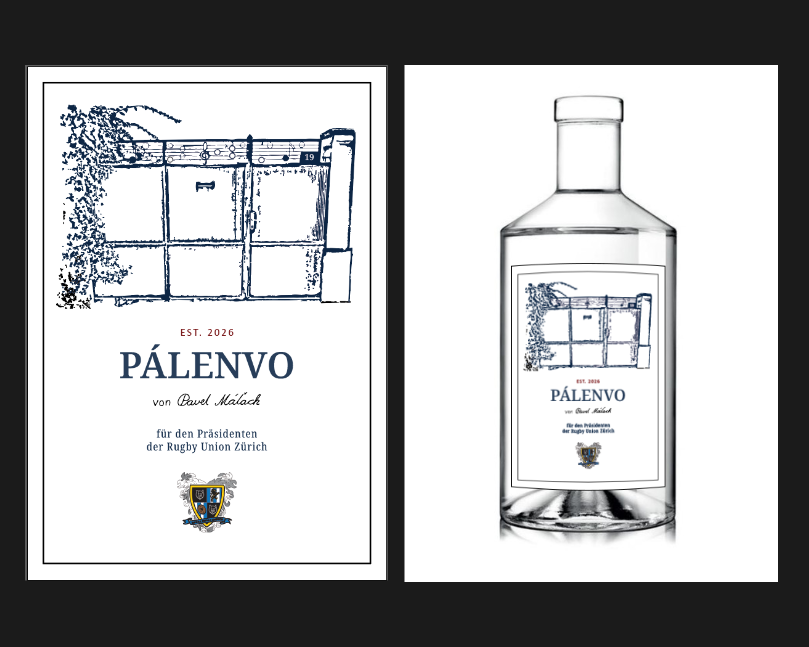
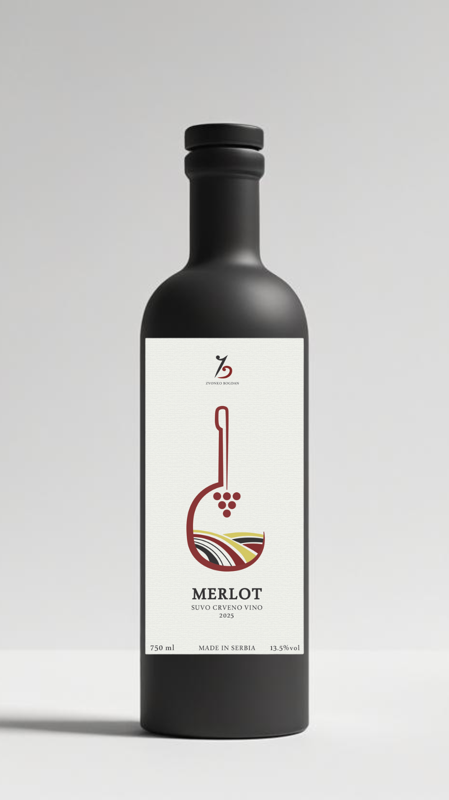
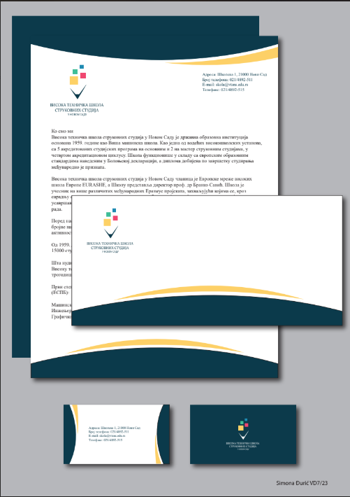
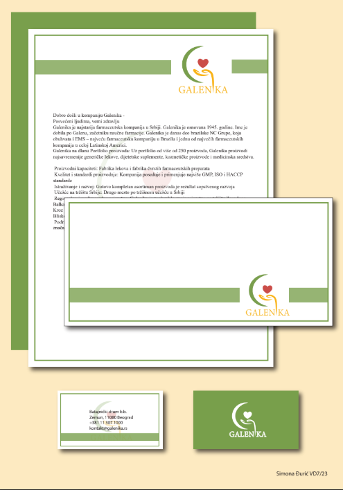
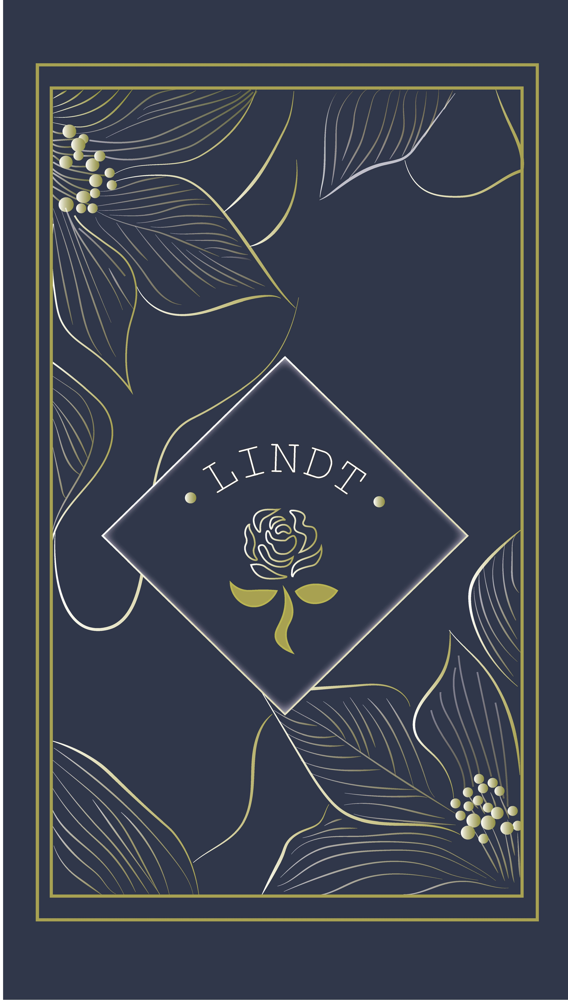
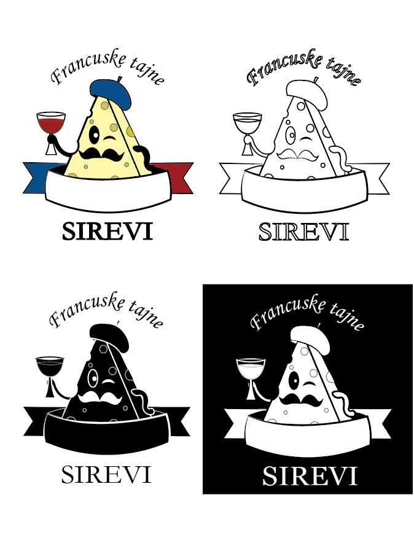
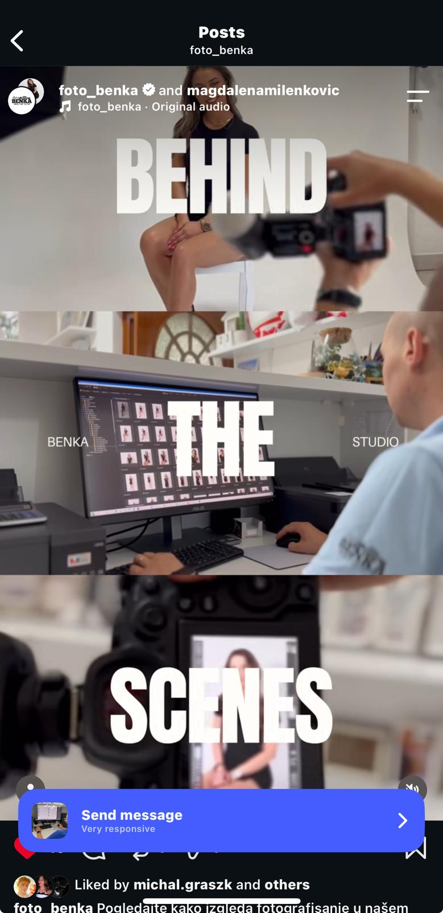

Latest projects

PÁLENVO — Client Project
Packaging Design · Label Design · Custom Illustration
Adobe Illustrator
Concept & Objective: This project was created for a Slovak client living in Switzerland who wanted a label for his homemade pálenka. The idea was to include something personal and meaningful to him, so I used the entrance gate of his grandfather's house in Bački Petrovac as the main illustration. I wanted the design to reflect his family history and connection to his hometown, while also making the product feel unique.

Zvonko Bogdan — Academic Project
Brand Identity · Packaging · Logo Design
Adobe Illustrator
Concept & Objective: This was a student project focused on creating a wine label inspired by the Zvonko Bogdan brand and its connection to the local wine and music culture. I wanted to combine two recognisable elements of the region: vineyards and tamburica music. The main illustration brings these elements together, giving the label a personal touch while keeping the overall design simple and elegant.
.png)
Fabrizia Limoncello Spritz — Academic Project
Brand Identity · Packaging · Logo Design
Adobe Illustrator
Concept & Objective: For this assignment, I had the freedom to choose any canned drink and create a new visual identity for it. I chose Fabrizia Limoncello Spritz because I liked the idea of working with a drink associated with summer and Italian culture. I wanted to move away from the usual bright and traditional look and create something more playful, inspired by summer nights, music and social gatherings.

VTŠNS — Academic Project
Brand Identity · Logo Design
Adobe Illustrator
Concept & Objective: The task was to create a new visual identity for the Higher Technical School of Professional Studies in Novi Sad, along with a set of matching stationery materials. I focused on creating a more modern and organised look that could be used across different materials. The project included a letterhead, envelope and business cards, all designed to follow the same visual style.

Galenika — Academic Project
Brand Identity · Logo Design
Adobe Illustrator
Concept & Objective: This project focused on refreshing the visual identity of Galenika and applying it to different stationery materials. I wanted to keep the connection with the existing pharmaceutical brand while giving it a slightly softer and more modern appearance. The design included a logo concept, letterhead, envelope and business cards, using the same colours and graphic elements to keep everything visually consistent.

Lindt Chocolate Packaging — Academic Project
Brand Identity · Packaging
Adobe Illustrator
Concept & Objective: Developed as a classroom assignment, this project focuses on a premium repackaging concept for Lindt chocolate. The objective was to elevate the brand's visual identity, moving it toward an ultra-elegant, luxurious aesthetic that positions the product as a high-end, sophisticated gift.

Francuske tajne — Academic Project
Brand Identity · Packaging
Adobe Illustrator
Concept & Objective:The idea behind this project was to create a visual identity for a brand inspired by French cheese and food culture. I wanted the brand to feel friendly and memorable, so I designed a small cheese character wearing a beret and holding a glass of wine. I also used colours inspired by the French flag to make the connection to France more recognisable. The goal was to create something playful that would stand out from more traditional food packaging.

Foto Benka
Print Design · Design for Photo Studio · Commercial Project
Watercolor, Oil painting, Adobe Illustrator, Photoshop, Canva
Concept & Objective: This project involved creating different merchandise designs for Foto Benka, including T-shirts, tote bags and mugs. I wanted to make the products more personal by including elements of Slovak culture and local traditions. I used folk patterns, traditional clothing and illustrations of local architecture as inspiration. The goal was to create souvenirs that people could use in everyday life while also representing the local community.

Foto Benka Website ↗
Web Design · Development
Figma, Wordpress
Concept & Objective: The goal was to create a new website for Foto Benka where visitors could easily explore the studio's photography, services and prices. I wanted the website to be simple to navigate and to let the photographs speak for themselves, without too many distracting elements. I also worked on the website structure and its WordPress implementation, including custom fields that allow the studio to update photographs, prices and other content without having to edit the code.

Foto Benka Video
Video Production · Content Creation
Canva, Adobe Premiere
Concept & Objective: I created short promotional videos for Foto Benka, showing different moments from behind the scenes of a photoshoot. I wanted to show more than just the final photographs, giving viewers a glimpse of the work that goes into creating them. The videos combine footage from the studio with the finished, edited pictures, using quick cuts, transitions and music to keep the content interesting and suitable for Instagram.
Fourity
Figma, WordPress, HTML5, CSS3, JavaScript
Concept & Objective: This project was a website redesign concept for Fourity, a company working in digital solutions and software development. The idea was to explore how the company's website could look with a more modern design, especially on mobile devices. I focused on making the layout easier to navigate and presenting the company's services in a clearer way. I also worked on different interactive elements and page sections to make the experience more engaging. Note: This is a personal redesign concept created as a portfolio project. The website was not officially published or implemented for Fourity.